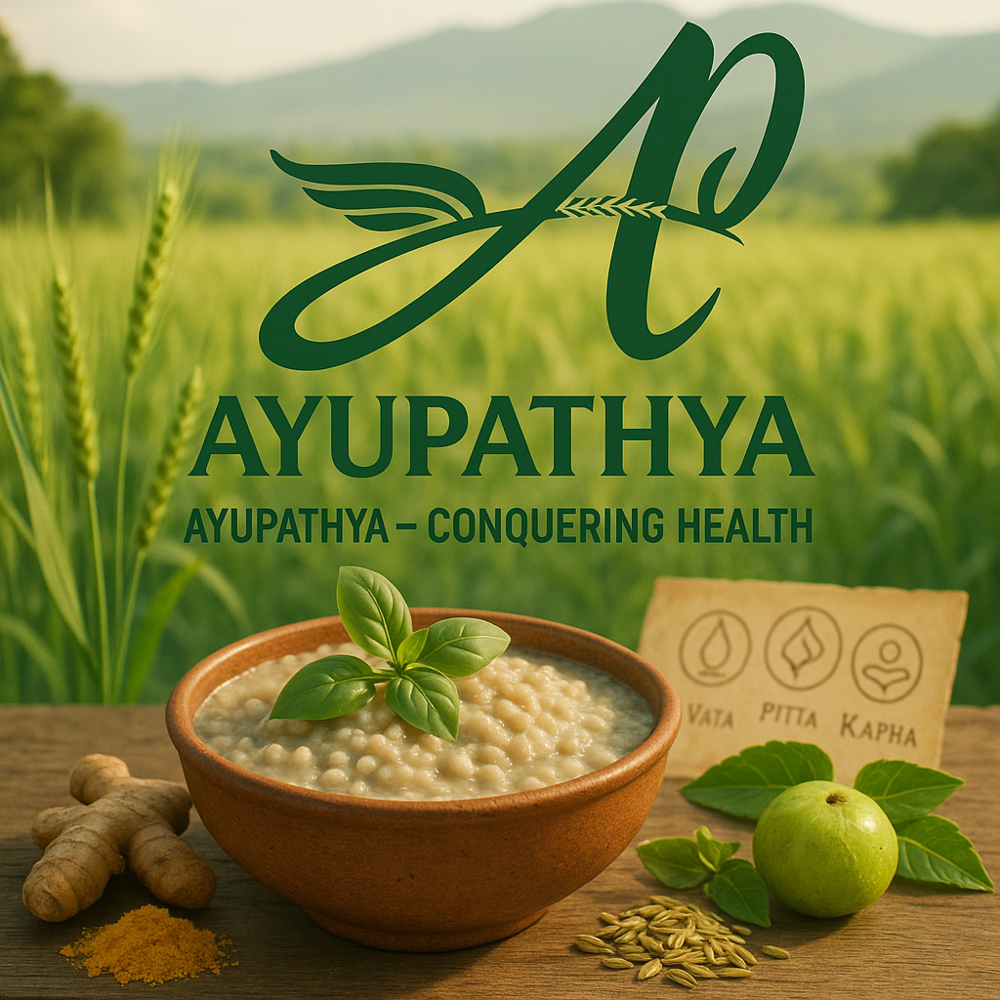

Welcome to Ayupathya
Promoting a Healthier Lifestyle with Ayurvedic Diet and Lifestyle – by Ayupathya Introduction to the Class Welcome to our signature class “Promoting a Healthier Lifestyle with Ayurvedic Diet and Lifestyle”, a thoughtfully designed program by Ayupathya, where ancient Ayurvedic wisdom meets modern wellness needs. Under the guidance of Dr. Pranav Kumar, an experienced Ayurvedic doctor and lifestyle consultant, this class offers a comprehensive journey into the time-tested practices of Ayurveda for achieving holistic health and sustainable well-being. Ayupathya is dedicated to reviving traditional dietary practices and lifestyle principles that align the body, mind, and spirit. This class is ideal for anyone seeking a natural, preventive approach to health — whether you're dealing with modern lifestyle diseases, aiming to improve digestion and immunity, or simply aspiring to live more consciously. What You’ll Learn 1. Fundamentals of Ayurveda Understanding the five elements (Pancha Mahabhutas) and the three doshas (Vata, Pitta, Kapha) Identifying your Prakriti (natural constitution) The concept of balance and imbalance in the body 2. Ayurvedic Diet Principles Food as medicine: Understanding the qualities (gunas) of different foods Seasonal eating (Ritucharya) and daily routines (Dinacharya) Guidelines for Ayurvedic food combinations and food incompatibilities (Viruddha Aahar) Detoxification and cleansing through diet (Langhana and Panchakarma basics) 3. Lifestyle Practices for Wellness Building a daily regimen (Dinacharya) for vitality and mental clarity Ayurvedic sleep hygiene, exercise recommendations, and mindful practices Techniques to manage stress and anxiety using Ayurvedic herbs and rituals 4. Practical Applications How to plan your Ayurvedic meals with locally available ingredients Cooking demonstrations using Ayupathya’s flagship products like Barley Sattu and Wholesome Daliya Home remedies for common ailments (indigestion, fatigue, skin issues) Simple yoga and breathing exercises for balancing doshas Why Choose This Class? Rooted in Authenticity: Guided by Dr. Pranav Kumar, this class is grounded in classical Ayurvedic texts and personalized for modern living. Practical & Applicable: You'll leave with actionable knowledge that can be incorporated into daily life for long-term health benefits. Natural & Sustainable: Emphasizes food and lifestyle choices that are eco-conscious, body-friendly, and preventative in nature. Community & Support: Join a growing community of individuals committed to living healthfully and naturally with Ayupathya’s guidance. Who Is This For? This class is perfect for: Individuals looking to improve overall health through diet and lifestyle People suffering from digestive issues, chronic fatigue, obesity, or stress-related problems Wellness practitioners, yoga teachers, and nutritionists wanting to deepen their Ayurvedic knowledge Families aiming to introduce Ayurvedic food habits at home Outcomes & Benefits By the end of this class, you will: Understand your unique body constitution and how to maintain its balance Learn how to nourish yourself seasonally and mindfully Gain confidence in preparing Ayurvedic meals and routines Experience improved digestion, immunity, mental clarity, and energy levels Join Us at Ayupathya This class is more than just a health course—it’s an invitation to reconnect with your inner balance through Ayurveda. Whether you're a beginner or someone seeking to deepen your practice, Ayupathya welcomes you to explore a healthier, more harmonious way of life. Live well. Eat wisely. Heal naturally — with Ayupathya.
Explore Our Services